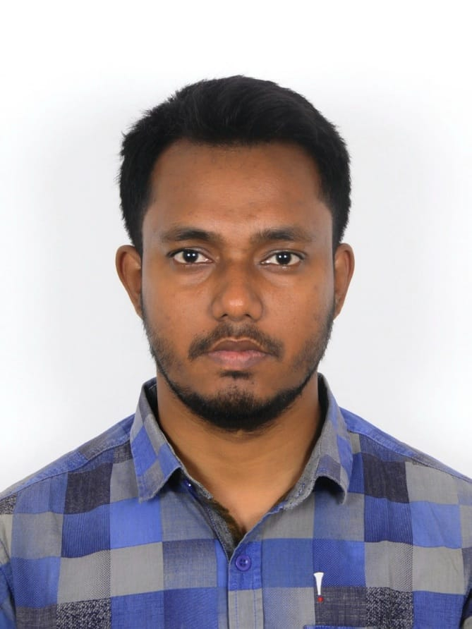

Md Sifatullah Saimum
Address: Suwon, South Koreamdsaimum93@gmail.com
About me Twitter GitHub Facebook Linkedin
Career Objectives
I am a pationate and self motivated web developer, currently learning Full
Stack Web Development. In future, I want to contribute in Web Development
and Computer Programming and also want to pursue a career in this field.
Professional Experience
Territory Executive (Aqua) at ACI Godrej Agrovet Pvt. Ltd., Dhaka,
Bangladesh
Responsibilties:
Intensive technical services
Farm management support
Conducting monthly seminars and training
Monitoring sustainable performance improvement
Area-in-Charge (Aqua) at Aftab Feed Products Ltd., Dhaka, Bangladesh
Responsibilties:
Supporting stakeholders
Improved Feed Conversion Ratio (FCR)
Mathematics Teacher at Mirpur Cadet Coaching, Dhaka, Bangladesh
Responsibilties:
Teaching Mathematics in English and Bengali mediums.
Designing curriculum
Preparing assessment tools
Evaluating student's performance.
Academic Information
Master's in Global Business at Kyungsung University, South Korea
Key Courses:
Advanced Leadership
Big Data Abalysis
Research Methodology and Academic Writing
Business Strategies
Marketing
Human Resource Management
Organizational Behavior
B.Sc. in Fisheries at Patuakhali Science and Technology University,
Bangladesh
Key Courses:
Aquaculture
Fisheries Management
Marine Science and Oceanography
Fisheries Technology
Fisheries Biology and Genetics
Skills
Language skill
Bengali-Native
English-Business level
Korean-Able to speak daily conversation
Hindi-Able to speak daily conversation
Dcumentation
Microsoft Word
Microsoft Excel
Powerpoint
Google Spreadsheet
Programing Language
Python
html
CSS
Javascript
Courses and Training
Full Stack Web Development in Udemy
Active Citizen Youth Leadership Training
Copyright © 2025 Md Sifatullah Saimum. All rights reserved